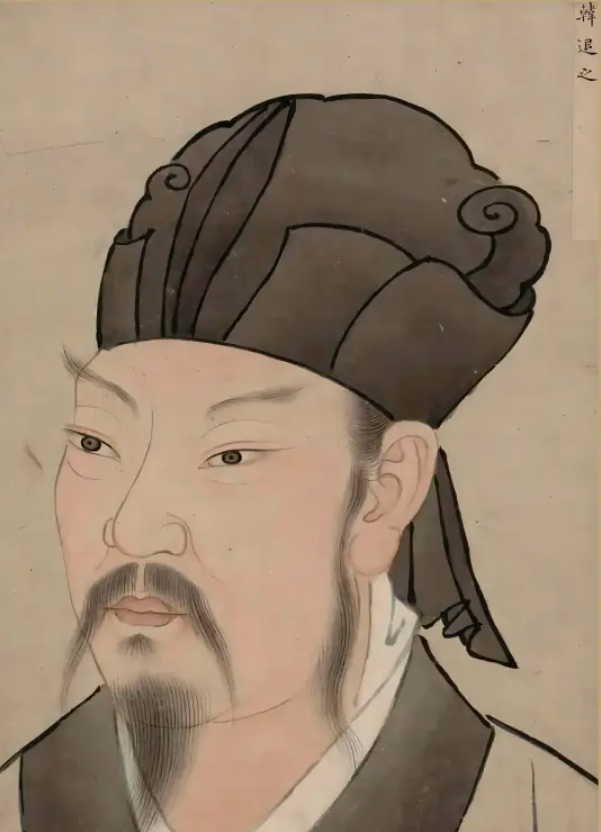
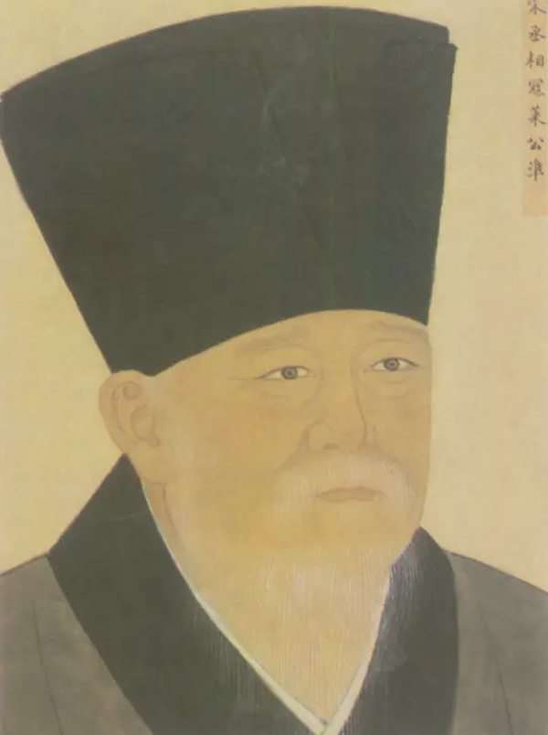
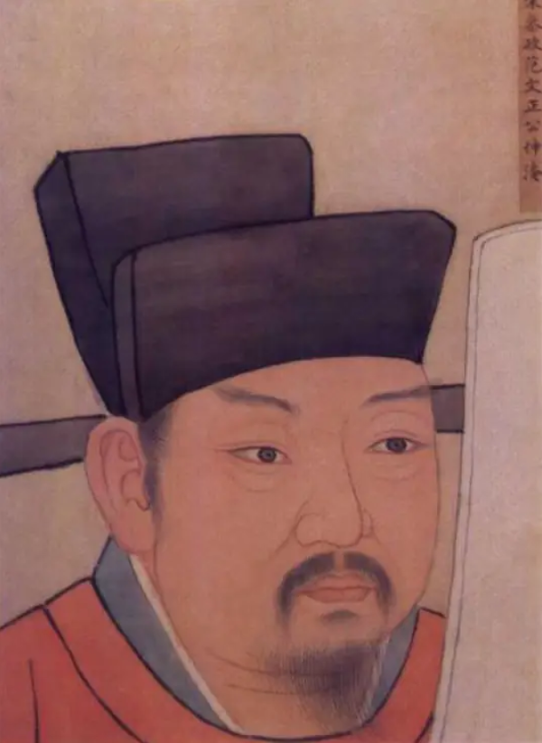

| 邓州三贤 |
| 韩愈，字退之，祖籍邓州南阳（今河南邓州），后迁河阳（今河南孟州）。他是唐代杰出的散文家和诗人，与柳宗元并称“韩柳”，同列为“唐宋八大家”之首，有“文章巨公”和“百代文宗”之名。他曾任吏部侍郎，因谏迎佛骨而被贬潮州。在路过邓州时，他赋诗三首，表达了对邓州的深厚感情。韩愈是古文运动的倡导者，他主张文以载道，强调文章要言之有物，反对骈文浮华不实的文风。他的诗文作品对后世产生了深远影响。 |
 |
 |
| 寇准，字平仲，华州下邽（今陕西渭南）人。他是北宋著名的政治家，十九岁进士及第，两度为相。寇准在邓州期间，不仅修缮了水利工程，还改善了民生，促进了当地经济的发展。他的清廉品质和勤政为民的作风，为后世树立了榜样。 |
 |
| 范仲淹，字希文，吴县人（今江苏苏州）。他是北宋著名的军事家、教育家、思想家、文学家。范仲淹一生忧国忧民，为官清正廉洁。他二十七岁中进士，官至参知政事。宋仁宗庆历五年十一月至皇祐元年正月，他知任邓州，孜孜民事，政平讼理。在邓州期间，他创建了花洲书院，亲自讲学，并写下了千古名篇《岳阳楼记》。这篇文章不仅表达了范仲淹的忧国忧民之情，还展现了他豁达开朗的胸襟和先忧后乐的情怀。 |
 |
|
返回 |